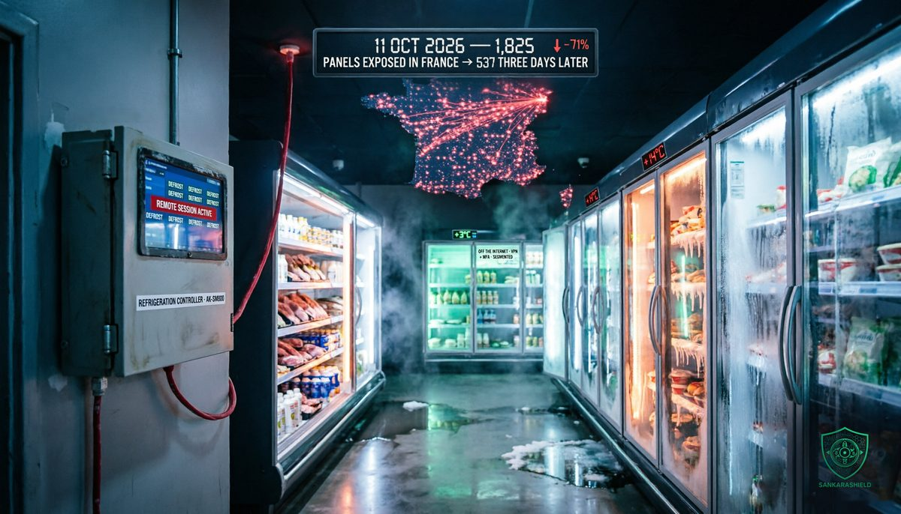

Nobody stole a single file. They just turned the cold off.

On the night of Sunday 11 October, attackers reached into the refrigeration systems of hundreds of French supermarkets and forced them into defrost. By the time stores opened on Monday, fresh and frozen products had been sitting for hours in cabinets that were warming instead of cooling. Some reports put the temperature inside at 50°C. Products went in the bin, some shelves stayed empty, and the Paris prosecutor opened an investigation.
There was no ransom note and no data leak. The damage was physical, and it was counted in tonnes of food.
WHAT ACTUALLY HAPPENED
The chains named in the press include Intermarché, Netto, Carrefour, Monoprix, Coopérative U and E.Leclerc. Store counts differ by source and are still preliminary: The Register reported about 150 Intermarché stores, about 80 Carrefour stores, 80 of Coopérative U's 2,000 stores and about 5% of Monoprix's 490. Overall estimates range from 250 to 350 stores.
The common thread is refrigeration management. The controllers that run cold rooms and display cases in a supermarket, and the StoreView web panels used to manage them, were reached and instructed to start defrost cycles. Defrost is a normal, built-in function. The attack did not need to break the fridge, only to ask it to warm up.
On 12 October, CERT-FR published an alert (CERTFR-2026-ALE-012) saying it was aware of numerous compromises of Danfoss AK-SM and AK-SC controllers. On 13 October, it added Copeland xweb and Dixell xweb systems to the list. That update matters: Coopérative U's CEO told RTL the company is not a Danfoss customer, which means this was not a single-vendor story.
Danfoss confirmed its equipment was targeted and said the affected stores were running outdated firmware. The affected units were mostly older AK-SM 800 controllers, end of life since 2021, and AK-SC 355 controllers, phased out from 2016, plus newer AK-SM 800A units that had not been updated.
The retailers describe a supplier-side problem: Les Mousquetaires said the systems were under the management of an external provider, and E.Leclerc said a refrigeration equipment supplier had been hit. Les Mousquetaires' CEO estimated losses in the tens of millions of euros. One Intermarché and one Super U store alone reported €270,000 in lost goods.
THE VULNERABILITIES THAT WERE ALREADY KNOWN
In 2025, Claroty's Team82 published research on the Danfoss AK-SM 800A and presented it at DEF CON. Danfoss fixed the issues:
— CVE-2025-41450, an authentication bypass. The controller accepted a hidden "code of the day" derived from the device's date, so anyone who reproduced the algorithm could log in without the administrator password.
— CVE-2025-41451, a command injection in the SMTP settings, leading to remote code execution once authenticated.
— CVE-2025-41452, a configuration injection leading to denial of service.
Chained together, the first two give an attacker full control of the controller. Claroty showed that this control could turn cooling off while staff still saw normal temperatures on screen. Firmware 4.3.1 and later fixes all three. The current release is 5.3.2.
Read this part carefully: no authority and no vendor has confirmed these CVEs were used in October. Claroty did not test the end-of-life models, which will not be fixed anyway. The entry point, whether direct exploitation of exposed panels or abuse of a maintenance provider's access, has not been made public. Security researcher Kevin Beaumont described exploiting the known flaws as "zero-skill", which says a lot about how low the bar was, whatever the actual route.
THE EXPOSURE, BEFORE AND AFTER
The striking numbers came from internet scans, not from the attackers.
On 11 October, Censys counted 2,991 Danfoss StoreView panels reachable from the internet worldwide, 1,825 of them in France: 61% of the global total. In France, 74% of those panels were running a version below the patched 4.3.1.
On 14 October, the French count had fallen to 537. That is a 71% drop in three days. Censys found no sign that devices had been patched; every version category fell by about the same amount. Operators were not updating the controllers. They were taking them off the internet.
Other scanners give different totals because they count services rather than hosts, and exposure does not prove compromise. But every count tells the same story: France had the largest pool of exposed refrigeration panels in the world, and most of them did not need to be there.
WHY THE COLD CHAIN CHANGES THE MATH
Most security programmes are built around data: who can read it, who can steal it, who can encrypt it. This attack ignored data entirely. It went after a physical process, and the cost appeared within hours, in stock that had to be destroyed and in food safety risk for customers.
That is what operational technology looks like in retail. A supermarket's refrigeration, HVAC, lighting and energy systems are run by controllers that were designed to be reliable, not to resist attackers. They are often installed and maintained by contractors, rarely appear in the IT asset inventory, and are almost never in scope for the SOC.
They were on the internet for a simple reason: convenience. Central engineering teams and refrigeration contractors want to check temperatures and troubleshoot without driving to the store. A maintenance shortcut became a national attack surface. The panel that saves a technician a drive is the first one an attacker finds.
WHY "END OF LIFE" IS A RISK, NOT A STATUS
An AK-SM 800 retired in 2021 still cools a cold room perfectly well. That is exactly why it is still in service. But it will never receive another security fix, and CERT-FR notes that a factory reset alone is not enough to make such a device trustworthy again.
End-of-life OT equipment is not legacy equipment waiting for a budget line. It is an open door with no lock left to fit. Until it is replaced, the only real protection is to make sure nobody can reach it: no internet exposure, a dedicated network segment, and remote access through a single controlled path.
The 71% drop is the uncomfortable proof. The fix was within reach all along, and it took a nationwide incident to apply it.
WHAT TO DO NOW
TAKE IT OFF THE INTERNET — no refrigeration, HVAC or building management interface should be reachable from the public internet; put remote access behind a VPN with MFA, or restrict it to known addresses.
TREAT EXPOSED UNITS AS COMPROMISED — CERT-FR's guidance for exposed controllers: limit provider access, factory reset, apply available fixes, change all secrets, check accounts and fully reconfigure.
INVENTORY YOUR OT — list every controller, its model, firmware and who can reach it; you cannot protect a fridge you do not know is connected.
UPDATE WHAT CAN BE UPDATED — AK-SM 800A units should run the latest Danfoss firmware; older 3.x units have to step through 4.x first.
REPLACE WHAT CANNOT BE PATCHED — budget the replacement of end-of-life controllers now, and isolate them on their own segment until then.
AUDIT YOUR CONTRACTORS — ask every maintenance provider how they connect to your sites, with which accounts, from where, and how that access is logged and revoked.
ADD A SECOND SOURCE OF TRUTH — independent temperature sensors and alarms, not connected to the controller, catch a cabinet that is warming while its own screen says everything is fine.
WHAT TO READ WITH CARE
The store counts, temperatures and loss estimates come from press reports and company statements and may change. The exposure figures come from Censys, as reported by Infosecurity Magazine; other scanners give different totals. The CERT-FR alert and its 13 October update are reported by several outlets. The vulnerabilities and fixed versions come from Claroty and Danfoss. As of this writing, the entry point is not public, no CVE has been linked to the attack, and nobody has claimed responsibility. A pro-Russian hacktivist campaign against French targets was active the same week, but no link to this attack has been established.
THE UNCOMFORTABLE PART
None of this required an advanced attacker. The vulnerabilities were public, the fixes were available, the devices were indexed by search engines, and the guidance to keep management interfaces off the internet is older than most of the controllers.
The attack worked because refrigeration was nobody's security problem. It was facilities, or the contractor, or the store. Now it is everyone's.
Your attack surface includes everything that plugs into a wall.
Do you know which of your building systems are reachable from the internet right now?